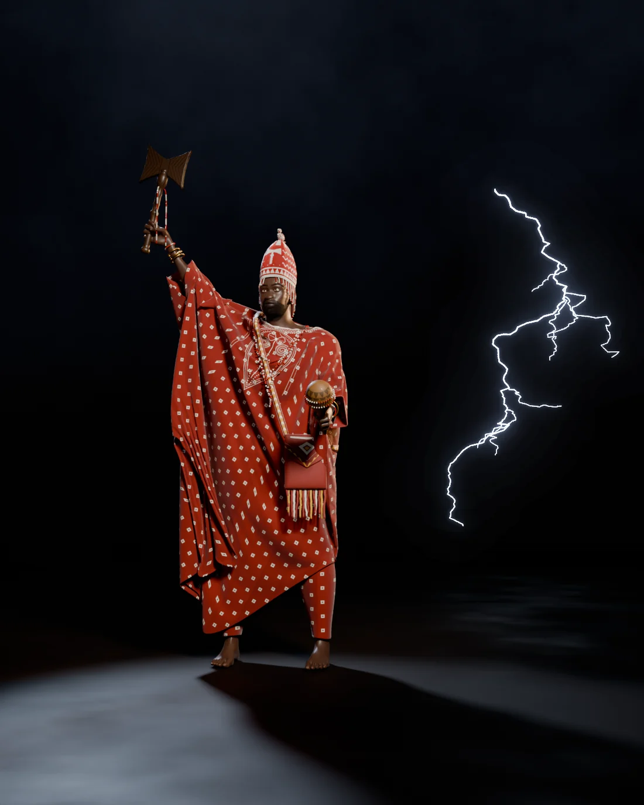
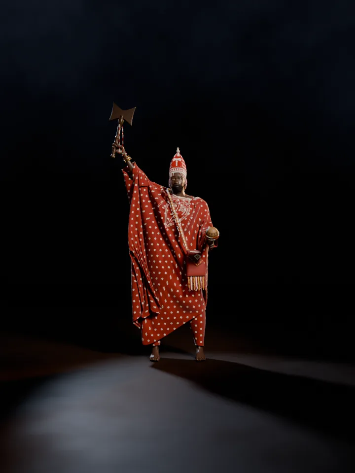

Yorùbá òrìṣà of thunder and lightning
A photoreal study of the thunder king in full regalia: a red aso-oke agbádá that hangs from his raised arm, a beaded crown with its veil, the double axe held high and the gourd rattle in his other hand.

Drag across the figure, use the slider, or focus it and press the arrow keys. Thirty-six views, ten degrees apart, rendered under the same lights as the figure turns.

Loading views 0 / 36
The embroidered teardrop on the chest, three strands of ìlẹ̀kẹ̀ over it and the làbà strap crossing to his right shoulder.
The agbádá falling from the raised arm in one wide sheet, the way the gown's sleeves gather when the arm goes up.
The long back of the bead veil and the strap returning down his back.
The sleeve hanging from the forearm that holds the ṣẹ̀rẹ̀, and the bag's leather fringe.
Select a picture to see it at full size.
Adé · glass seed beads
A conical crown of 15,532 separately modelled beads, with a fringe of bead strands and a bird on top. On a beaded crown in the High Museum, the bird at the peak identifies the king as a descendant of Odùduwà, and the veil makes him a living embodiment of that ancestor. Here the veil is cut short so his face stays visible. The zigzag lightning and the axe emblem are this study's own design.
Source: High Museum of Art
Ilà · six lines on each cheek
Six horizontal lines on each cheek, the Ọ̀yọ́ style associated with the Aláàfin. They are painted into the skin's height map so they catch light like healed cuts. Brows, lashes and the short coiled beard are close to 90,000 separate hair curves.
Source: Wikipedia: Yoruba tribal marks
Oṣé · carved wood, glass beads, brass
Held high, as on Ben Enwonwu's bronze Ṣàngó in Lagos. Shrine carvings show a devotee carrying the oṣé above her head. The strands under the blades are strung in sixes.
Sources: Eyes of a Lagos Boy, Chazen Museum of Art
Ṣẹ̀rẹ̀ · làbà
The ṣẹ̀rẹ̀ is a gourd holding dried seeds, shaken to call Ṣàngó. A priest carried it and the oṣé in the làbà, a goat-leather bag embroidered with fine strips of leather dyed red and yellow. One dealer's account reads the red as Ṣàngó's destructive rage.
Source: Michael Backman Ltd
Beads in sixes · strip-woven cloth
Red and white beads in groups of six on red cloth with white squares. Gowns like this are cut wide from narrow strip-woven cloth, richly embroidered, and worn with the sleeves bunched at the shoulders.
Sources: Wikipedia: Shango, Smarthistory
Classical shrine art shows Ṣàngó through his devotees and emblems rather than as a portrait, so any face given to him is an interpretation. This list keeps the two apart.
The body starts from MakeHuman's free base mesh, shaped and rigged, then posed bone by bone. The fists were closed around the handles by fitting the fingers to each grip.
The agbádá is one cloth pattern, a rectangle folded at the shoulders with a neck opening and sewn sides. It was draped on the body with the arms out, then simulated while the arms moved into the final pose, so every fold comes from the cloth hanging off the raised arm.
Beads, strands and strap were placed by small physics passes: the necklaces were dropped over the head and allowed to settle on the cloth, the crown's veil slides over the head and ears, and the strap was pulled taut over the shoulder.
| Agbádá cloth, simulated vertices | 14,219 |
|---|---|
| Simulated frames, arms out to final pose | 104 |
| Body mesh vertices, before smoothing | 13,380 |
| Beads on the crown | 15,532 |
| Beads in the veil, 50 strands | 1,456 |
| Beads in the three necklaces | 405 |
| Beads on the axe, rattle and wrists | 313 |
| Beard and moustache curves | 86,951 |
| Brow and lash curves | 2,845 |
| Scalp curves, mostly under the crown | 43,397 |
| Samples per pixel, stills / turntable | 80 / 32 |